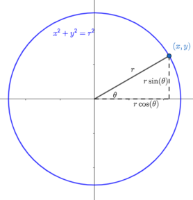

Calculus 2, Lab 7: Polar curves#
Polar coordinates provide us with an alternative coordinate system for the plane. Instead of a rectangular grid system, we fill the plane with circles centred at the origin. We can locate any point on the plane by first specifying a circle (given by its radius \(r\)), and then saying where on that circle we are, using an angle \(\theta\).

Trigonometry gives us the relationships:
Unlike rectangular coordinates, polar coordinates are not uniquely defined, due to the periodic nature of the sine and cosine functions. For example, the polar coordinates \((4,\pi/3)\), \((4,-5\pi/3)\) and \((4, 7\pi/3)\) all decribe the same point, with rectangular coordinates \((2,2\sqrt{3})\). By convention, we allow \(r\) to be negative, and interpret this as moving backwards along the line through the origin corresponding to the angle \(\theta\). This is the same as rotating by an angle of \(\pi\) and moving forwards, so, for example, the coordinates \((-4,4\pi/3)\) also describe the same point as the rectangular coordinates \((2,2\sqrt{3})\).
Most curves are defined in polar coordinates by giving \(r\) as a function of \(\theta\) (\(r=f(\theta)\)).
Some examples:
if \(c>0\) is a constant, \(r=c\) is a circle of radius \(c\). \(r=0\) is the origin \((0,0)\), which is the only point where no angle \(\theta\) can be defined
if \(r=\theta\), we get further and further from the origin as \(\theta\) increases, and the result is a spiral
the equation \(r=\sin(\theta)\) describes a circle! This might not be obvious at first, but if we multiply both sides of the equation by \(r\), we get \(r^2=r\sin(\theta)\). In rectangular coordinates, this is \(x^2+y^2=y\), and by completing the square, we can write this as \(x^2+\left(y-\frac12\right)^2=\frac14\)
Many other (really cool) curves can be created using different functions of \(\theta\), many of which would be difficult to describe in rectangular coordinates.
Plotting polar curves#
When plotting an equation \(r=f(\theta)\) by hand, we try to imagine moving our pen further from (or nearer to) the origin as we vary \(\theta\), depending on whether \(f(\theta)\) is increasing or decreasing. We can manage some limited success this way, but again it is easier to defer to the computer.
Many programs (both GeoGebra and SymPy included) do not have a built in polar plotting utility. This is because any polar curve \(r=f(\theta)\) can be treated as a parametric curve:
So to plot a polar curve, we first convert it to parametric, and then use the same plot_parametric function from SymPy as we used in the previous tutorial.
For example, to plot the curve \(r=\sin(5\theta)\), with \(0\leq \theta\leq \pi\), we would do the following:
import sympy as sy
sy.init_printing()
t = sy.symbols('t') #this will just be more convenient than typing "theta" all the time
r = sy.sin(5*t)
x = r*sy.cos(t)
y = r*sy.sin(t)
pi = sy.pi #for later convenience
pp = sy.plot_parametric #also for later convenience
pp((x,y),(t,0,pi))
Problem 1#
Plot the following polar curves. In each case, you will need to decide on an appropriate interval of the form \([0,k\pi]\), for some positive integer \(k\), to ensure that you’ve produced the entire curve. (Note that your curve will have returned to where it started if \(f(\theta+k\pi)=f(\theta)\).)
(a) \(r = \sin(\theta)+\sin^3(5\theta/2)\)
(b) \(r = \sin(8\theta/5)\)
(c) \(r = \sin^2(4\theta)+\cos(4\theta)\)
Families of polar curves#
In the textbook, you have seen that there are some common families of polar curves, with each member given by a different value for a parameter. For example, the equations \(r=a\pm b\cos(\theta)\) define a family of curves called limaçons.
We can investigate how these curves change as we vary the parameter(s) by using some of the interactive features of a Jupyter notebook: the ipywidgets library contains an assortment of interactive “widgets” that you can use in your notebook. For example, here is a family of limaçons, with \(b=2\).
You can drag the slider with your mouse, or click on the slider and then use the arrow keys on your keyboard.
%matplotlib inline
import ipywidgets as ipw
import numpy as np
import matplotlib.pyplot as plt
# Need to define a plotting function depending on a parameter
def polar_plot(a):
t = np.linspace(0,2*np.pi,50)
r = a+2*np.cos(t) #define f(theta)
x = r*np.cos(t)
y = r*np.sin(t)
plt.plot(x,y)
plt.xlim(-3.5,7.5)
plt.ylim(-5.5,5.5)
ipw.interact(polar_plot,a = ipw.FloatSlider(value=3,min=0,max=5,step=0.2));
Problem 2#
Consider the family of polar curves given by the equation \(r = \dfrac{1-a\cos(\theta)}{1+a\cos(\theta)}\).
Construct an interactive applet to plot this family, for integer values of \(a\) from \(-5\) to \(5\).
Investigate how the curve changes as \(a\) varies. In particular, identify the values of \(a\) for which the shape changes significantly. (You may be able to deduce what these values are from the polar equation, but you should investigate using an applet.)
Suggestion: use code similar to the above, but replace FloatSlider with IntSlider. Use a starting value of 2, a minimum of \(-5\), and a maximum of 5. (You can use the default step of 1. You could also stick with FloatSlider if you want to experiment with a smaller step size.) You will need to adjust the \(x\) and \(y\) ranges for the viewing window as well.
Problem 3#
Consider the family of curves given by the polar equation \(r=1+c\sin(n\theta)\), where \(c\) is a real number, and \(n\) is a positive integer.
(Note that this is a two parameter family: we have a real number parameter \(c\), and a natural number parameter \(n\).)
Construct an applet to plot these curves using two sliders: a
FloatSliderfor \(c\), with range \(-3\) to \(3\), and step \(0.2\), and anIntSliderfor \(n\), with range \(1\) to \(12\).How does the curve change as \(n\) increases? How does it change as \(c\) changes?